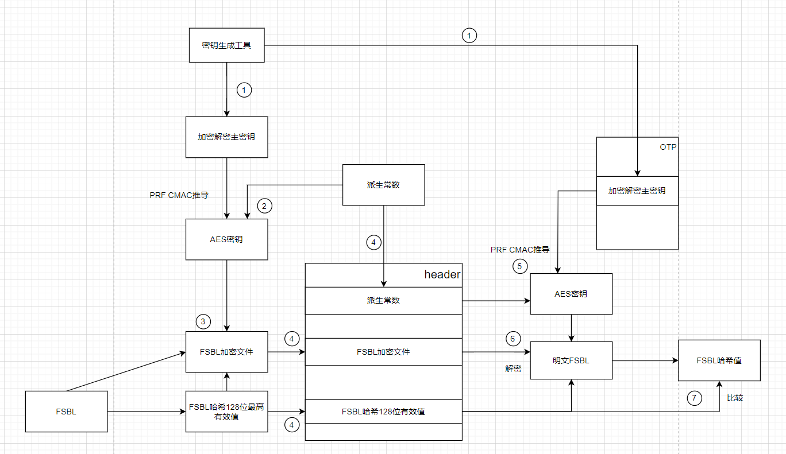

使用密钥生成工具，生成公钥私钥
存储公钥值表hash和加密解密主密钥在OTP中(OTP一次性编程存储器，不能擦除和修改)BSEC 可以理解为管理 OTP 的一种机制或控制器。8个公钥经过hash处理，将八个hash值放在一张表里，存储在header中。
签名，计算镜像的hash，将该哈希值用私钥签名，（ECC算法生成了一个签名）公钥和签名放入header中。
镜像存放在header中
计算（哈希值表）的hash，与BSEC中的PKHTH比较。验证我们的公钥表是没有被改变的。
计算header中可用公钥的hash（用什么公钥，验证哪个），与表中的hash比较，验证。如果相等，我们拿到了正确的公钥。
使用验证过的公钥，验证签名:计算header中镜像的hash，与公钥解密镜像得到的hash进行比较。
如此，签名验证完成。
1，2步为主机厂进行的动作，其他为ROM动作
---
PS:加密解密主密钥，并非业务密钥，使用派生常数，派生加密解密密钥。（可以存储在HSM中避免明文暴露。）
将FBSL的明文二进制文件计算hash，将hash的128最高有效位存储在header中
使用派生常数，根据PRF CMAC推导，将加密解密主密钥生成加密密钥
加密密钥根据AES算法（对称加密），AES的初始向量设置为128最高有效位，对镜像明文进行加密，存放在header中。
解密主机厂通过密钥生成工具，还将加密解密主密钥存储在OTP中，上文“主机厂干了什么？”的第一步中。
ROM代码使用header中的派生常数，获得解密密钥。
解密密钥使用AES算法（AES的初始向量为header中的FBSL镜像哈希128位最高有效位），解密文件，获得FSBL明文。
将该明文计算hash，与head中的128位最高有效位比较。
验证完成
